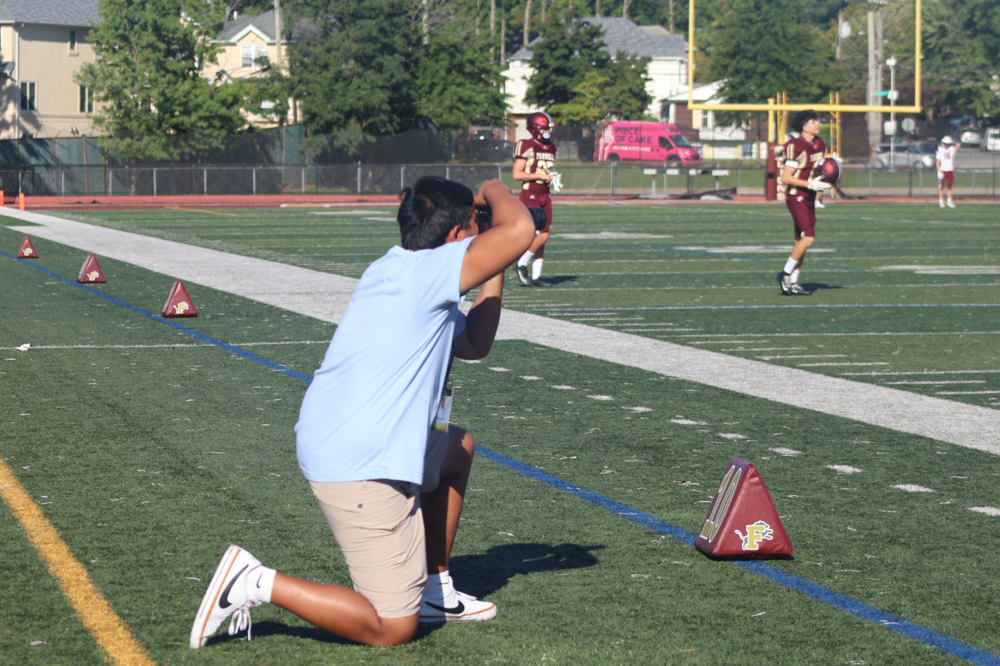

This is my "website as a self-portrait" . My passion is sports. I like to cover different kinds of sports on Staten Island from football, to basketball, baseball, and softball.
I started getting into sports photography in 2025. I was watching a high school football game at the Staten Island FerryHawks and I saw photographers capturing photos of the athletes and coaches. That inspired me to create my own portfolio showcasing my love of sports.
